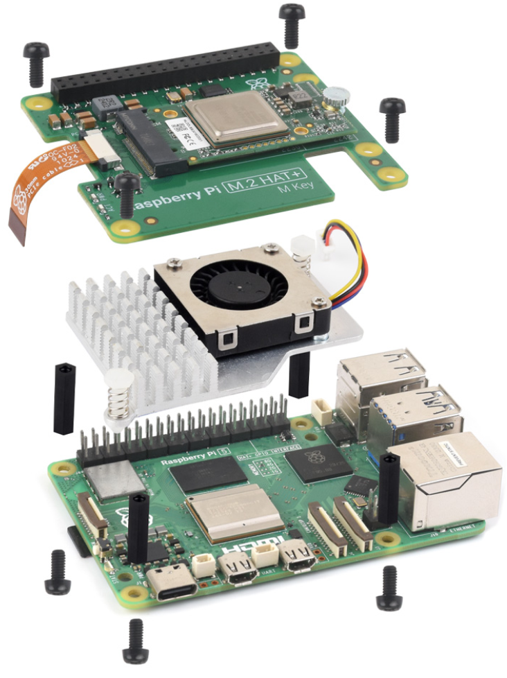
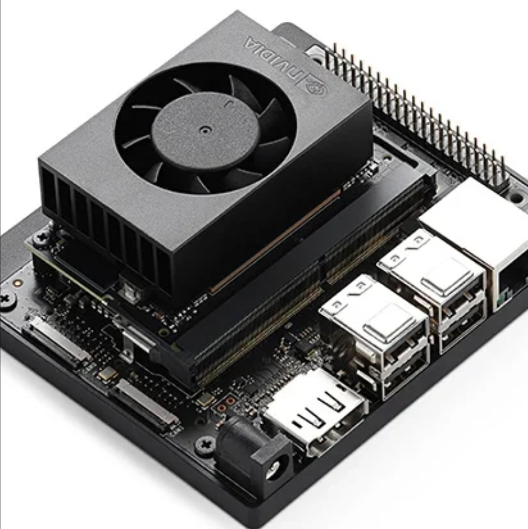
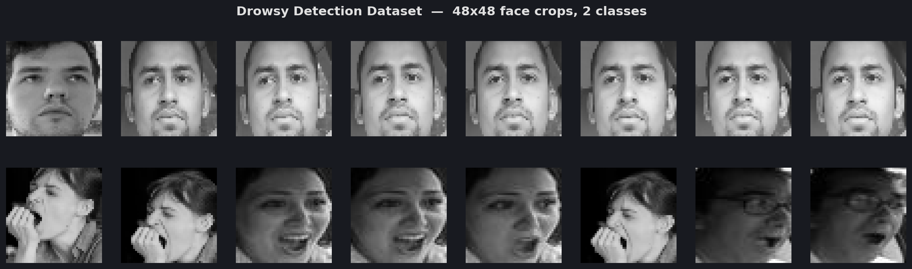
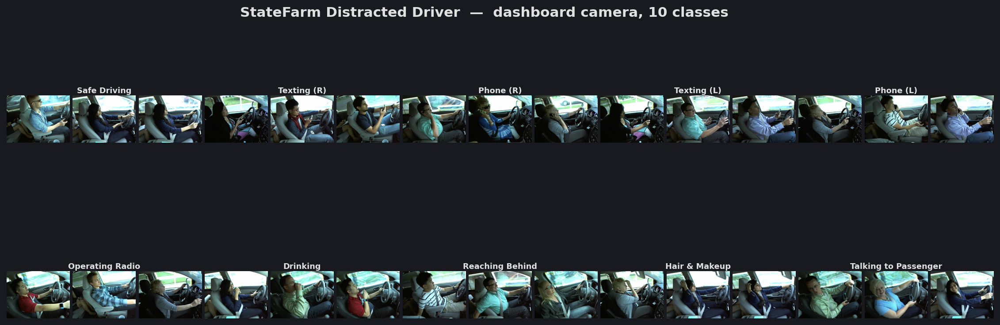
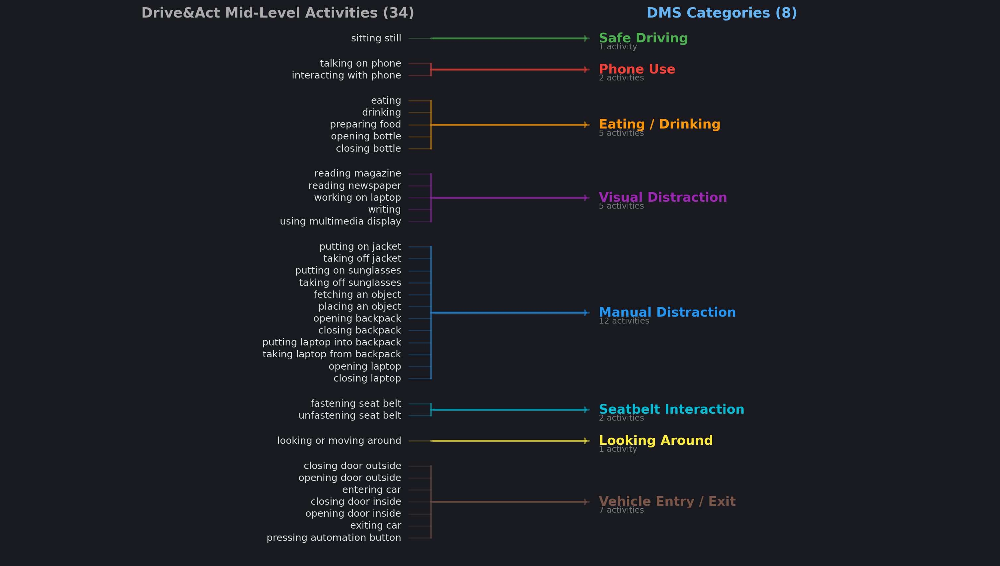
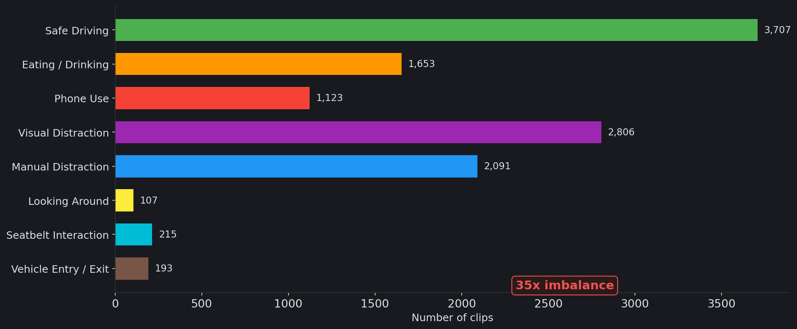
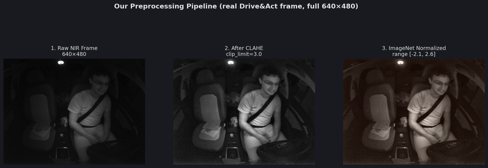
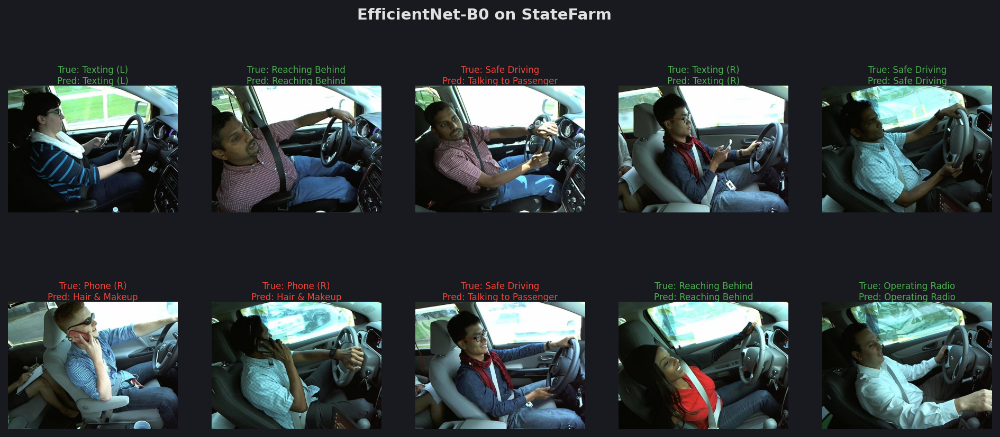
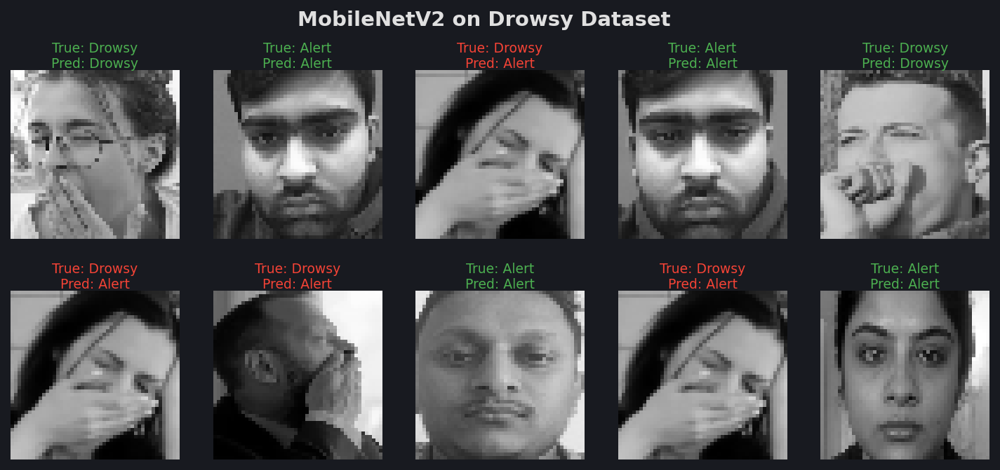

Machine learning edge deployed models for real-time driver behaviour alerts.
Mowasalat · DMS R&D Scope · 2026


| # | Model Name | Covered Events | Size | Dataset | Accuracy |
Pi 5 +
Hailo 8 |
Jetson
Orin Nano |
|---|---|---|---|---|---|---|---|
| 1 | MobileNetV2
TEEN-D
|
FatigueDrowsiness1/5
|
~14 MB | Kaggle DDD | 98.99% | ✓ | ✓ |
| 2 | VGG16
TEEN-D
|
FatigueDrowsiness1/5
|
~528 MB | Kaggle DDD | 97.51% | ✗ | ✓ |
| 3 | ResNet18
TEEN-D
|
FatigueDrowsiness1/5
|
~45 MB | Kaggle DDD | 95.28% | ✓ | ✓ |
| 4 | EfficientNet-B0
Followb1ind1y
|
DistractedPhoneEating2/5
|
~21 MB | StateFarm | 97.43% | ✓ | ✓ |
| 5 | MobileNetV3-Large
Followb1ind1y
|
DistractedPhoneEating2/5
|
~22 MB | StateFarm | 95.03% | ✓ | ✓ |
| 6 | YOLOv8n-cls
Malek-Messaoudi/State-Farm-Driver-Detection
|
DistractedPhoneEating2/5
|
~6 MB | StateFarm | 99.55% | ✓ | ✓ |
| 7 | YOLOv11x-cls
mosesb/drowsiness-detection-yolo-cls
|
FatigueEyesYawning1/5
|
~60 MB | Kaggle DDD + custom | 97.8% | ✗ | ✓ |
| 8 | MobileViT-v2-200
mosesb/drowsiness-detection-mobileViT-v2
|
FatigueEyesYawning1/5
|
~80 MB | Kaggle DDD + custom | 96.1% | ✗ | ✓ |
| 9 | ViT-Base-patch16-224
chbh7051/vit-driver-drowsiness-detection
|
FatigueEyesYawning1/5
|
~330 MB | chbh7051/driver-drowsiness | 99.0% | ✗ | ✓ |
| 10 | Custom CNN + VGG16
TEEN-D/Driver-Drowsiness-Detection
|
FatigueEyesYawning1/5
|
~140 MB | Kaggle DDD | 91.6% | ~ | ✓ |
| # | Model Name | Covered Events | Size | Dataset | Performance |
Pi 5 +
Hailo 8 |
Jetson
Orin Nano |
|---|---|---|---|---|---|---|---|
| 11 | TSM +
ResNet50
8-class DMS action recognition on NIR video
|
Safe drivingPhoneEatingDistractedSeatbeltLooking around3/5
|
~98 MB | Drive&Act (NIR) | 63.28% Acc | ✗ | ✓ |
| 12 | Video Swin
Transformer
Video Swin Transformer (2023)
|
Distracted (9 classes)Fatigue2/5
|
~200 MB | DMD | 97.5% Acc | ✗ | ✓ |
mAP50 measures how accurately the model both locates and classifies objects — a score of 90% means the model correctly detects 9 out of 10 objects with at least 50% bounding box overlap.
| # | Model Name | Covered Events | Size | Dataset | mAP50 |
Pi 5 +
Hailo 8 |
Jetson
Orin Nano |
|---|---|---|---|---|---|---|---|
| 13 | YOLOv8
Driver behaviors (Jui) — 9,901 images
|
SeatbeltSmokingPhone3/5
|
~6 MB | Roboflow: Driver behaviors | ~85–90% | ✓ | ✓ |
| 14 | YOLOv8
DMD (Driver Monitoring) — 9,739 images
|
DistractedFatigueEyes2/5
|
~22 MB | Roboflow: DMD | ~89–92% | ✓ | ✓ |
| 15 | YOLOv8 +
MHSA + ECA
ME-YOLOv8 (Debsi et al. 2024)
|
PhoneEyesYawnSeatbeltFatigue3/5
|
~30–50 MB | DDFDD + StateFarm + YawDD | 87–93% | ✗ | ✓ |
| 16 | YOLOv8 +
DBCA + AFGCA
DAHD-YOLO (MDPI Sensors 2025)
|
SmokingPhoneDistracted3/5
|
~30–60 MB | Custom + Kaggle cigarette | ~90% | ✗ | ✓ |
| 17 | YOLOv8
(Core ML)
DriveSafe — 1,886 images
|
FatigueDrowsinessDistracted1/5
|
~6 MB | FORM + YawDD | ~92% | ~ | ~ |




Drive&Act defines 34 fine-grained activities collapsed into 8 DMS-relevant categories. 35× class imbalance (safe_driving: 3,707 vs looking_around: 107).

NIR frames are extremely dark, therefore preprocessing is necessary to make it compatible with open source models trained on ImageNet.


Each row = one DMS class. Confidence = softmax probability for the predicted label.